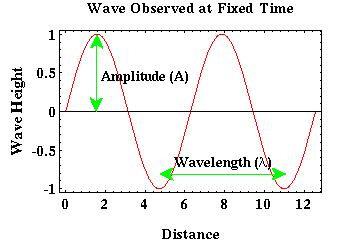
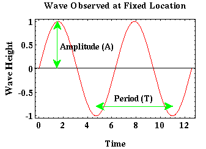

Elastic Waves
When the is Earth rapidly displaced or distorted at some point, the energy imparted into the Earth by the source of the distortion can be transmitted in the form of elastic waves. A wave is a disturbance that propagates through, or on the surface of, a medium. Elastic waves satisfy this condition and also propagate through the medium without causing permanent deformation of any point in the medium. Elastic waves are fairly common. For example, sound propagates through the air as elastic waves and water waves propagate across the surface of a pond as elastic waves.
In fact, water waves on the surface of a pond offer a convenient analogy for waves propagating through the earth. When a pebble is thrown into a pond, the disturbance caused by the pebble propagates radially outward in all directions. As the ripples move away from their source, notice that there are two distinct ways of looking at the waves as they travel. These two distinct viewpoints are called frames of reference.
- We can view the waves propagating across the surface of the pond from above the pond. At any time, the waves form a circular ring around the source with some radius that is governed by the speed at which the wave propagates through the water and the time elapsed since the wave originated at the source. In this viewpoint, we fix time and we view the wavefield at any location across the entire surface.
- We can view these same waves as they propagate through some fixed location on the surface of the pond. That is, imagine that instead of observing the waves from above the pond, we are in a small boat on the surface of the pond, and we record how the boat moves up and down with respect to time as the wave propagates past the boat. In this viewpoint, we fix our spatial location and view the wavefield at this location at all times.
These two viewpoints give us two fundamentally different pictures of the exact same wave. Assume that our ripple propagating outward from the source can be approximated by a sine wave.
From the first perspective, we can examine the wave at any location on the surface of the pond at some fixed time. That wave would then be described as shown in the figure below.

In this reference frame, the wave is defined by two parameters: amplitude and wavelength. Amplitude is the peak to trough height of the wave divided by two. Wavelength is the distance over which the wave goes through one complete cycle (e.g., from one peak to the next, or from one trough to the next).
From our second perspective, we can examine the wave at a fixed location on the surface of the pond as it propagates past us. That is, as time varies. That wave would be described as shown below.

In this frame of reference the wave is described by an amplitude and a period. The amplitude described in this frame is identical to the amplitude described previously. Period is the time over which the wave is observed to complete a single cycle. Another commonly used description related to period is the frequency. Frequency is nothing more than the reciprocal of the period. If the period is measured in seconds (s), frequency has the units of Hertz (Hz), 1/s.
As you might expect, period and wavelength are related. They are related by the speed at which the wave propagates across the surface of the pond, c, where c equals the wavelength divided by the period of the wave.
Seismology
- Simple Earth Model: Low-Velocity Layer Over a Halfspacepg 11
- Head Wavespg 12
- Records of Ground Motionpg 13
- Travel-time Curves for a Simple Earth Modelpg 14
- First Arrivalspg 15
- Determining Earth Structure from Travel Timespg 16
- Derivation of Travel Time Equationspg 17
- High-Velocity Layer Over a Halfspace: Reprisepg 18
- Picking Times of Arrivalspg 25
- Wave Propagation with Multiple Horizontal Layerspg 26
- Travel Time Curves from Multiple Horizontalpg 27
- Hidden Layerspg 28
- Head Waves from a Dipping Layer: Shooting Down Dippg 29
- Head Waves from a Dipping Layer: Shooting Up Dippg 30
- A Field Procedure for Recognizing Dipping Bedspg 31
- Estimating Dips and Depths from Travelpg 32